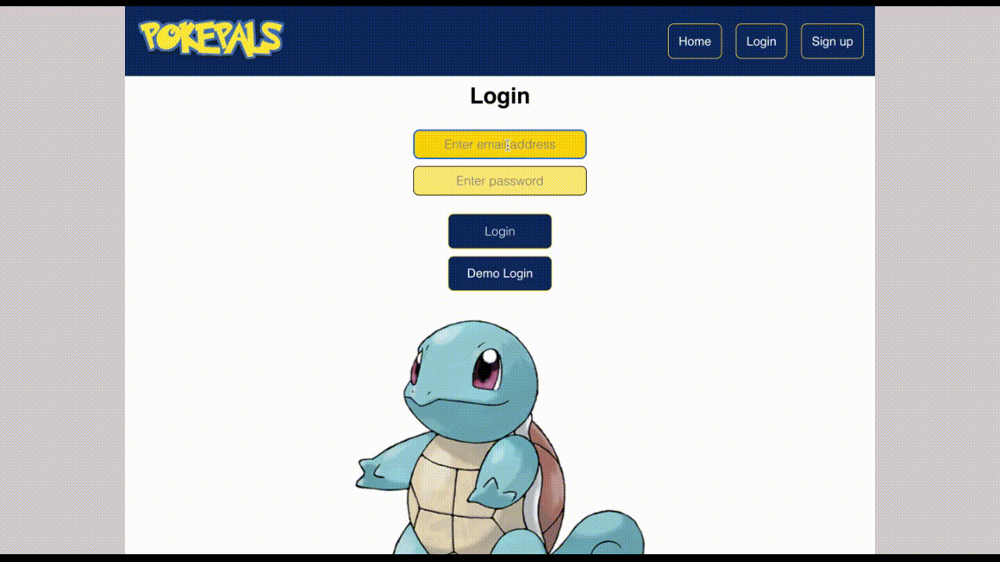

As part of the 12-week Full-Stack Bootcamp offered by Bright Network, our team developed a full-stack project using React for the front-end and Java (Spring Boot) with a PostgreSQL database for the back-end. The project aimed to consolidate our learning and skills picked up throughout the bootcamp.
The project also utilized the PokéAPI to create a Pokémon game inspired by the former fan game, Pokémon Crater. Users could create an account, explore a 2D map, and capture wild Pokémon to fill their Pokédex. While there were additional aims such as incorporating a Pokémon battle system and type-based maps like in the original game, the limited timeframe meant that the base MVP was the priority.

What did I learn?
- How to plan and develop a full-stack application which also utilises an external API
- How to use GitHub for collaboration (using branches and dealing with merge conflicts)
- Connecting an external API as well as a Java (Spring Boot) back-end to a React front-end
- How to structure a React application to ensure states are at a suitable level within the app with the aim of minimising prop-drilling whilst still allowing access to states where needed
- The use of conditional rendering to show certain buttons or pages in different scenarios
- The use of React Hooks (UseEffect, UseState)
- Better understanding of the React Lifecycle and Virtual DOM through the development of the map mechanics
- The use of SessionStorage to keep track of logged-in user
- The use of ReactRouter to create a multi-page React App
- The access to the various input types within HTML forms (email, password etc.) - allowing basic validation/formatting of inputs